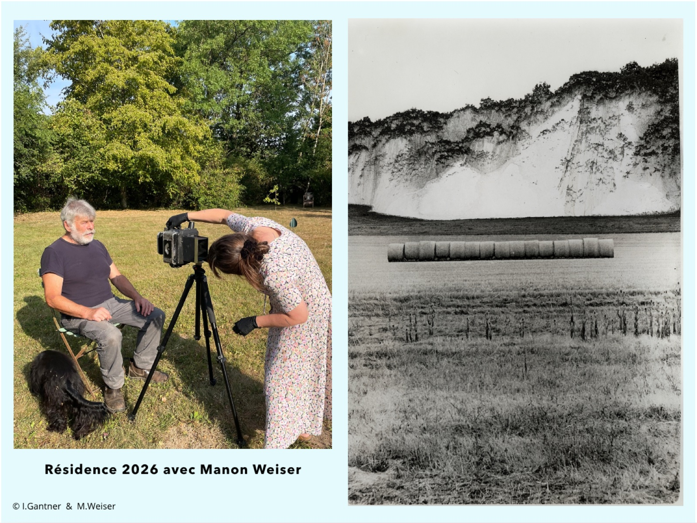
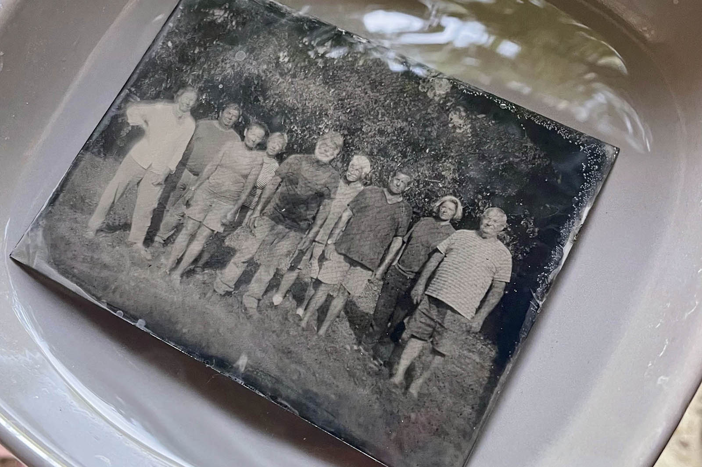

Accompagner, expérimenter, construire son regard et développer son écriture visuelle.


Maison Farouche accueille des photographes en résidence dans un environnement propice à la recherche et à la création. Loin du rythme habituel, les artistes disposent d’un espace pour approfondir leur démarche. Un mentorat accompagne leur écriture visuelle et la réalisation d’une production in situ. Cette production sera par la suite restituée sous la forme d’une exposition lors du festival l’Envers.
L’hébergement, le laboratoire argentique, l’atelier et la logistique de production sont mis à leur disposition.
Le programme de la résidence s’adresse en priorité aux artistes émergents.
La résidence est aussi un espace de rencontre : avec le territoire, ses habitants et les publics.